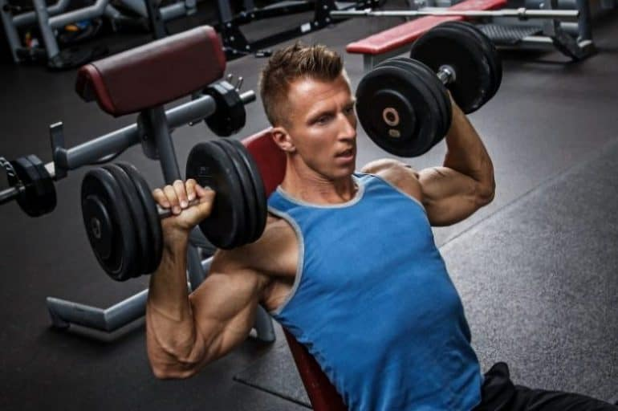
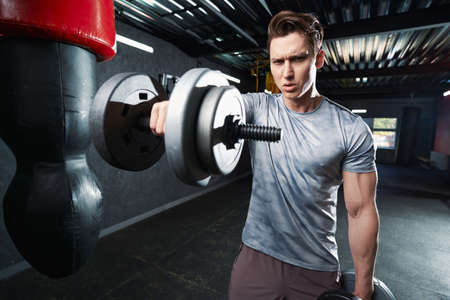
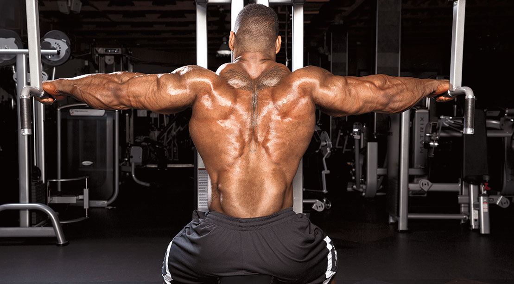
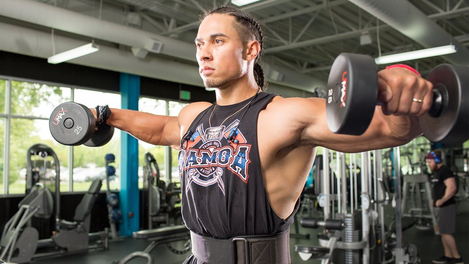
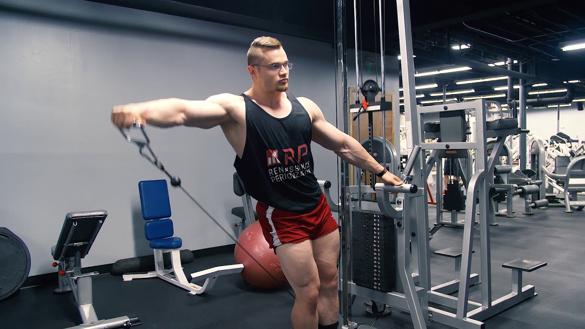
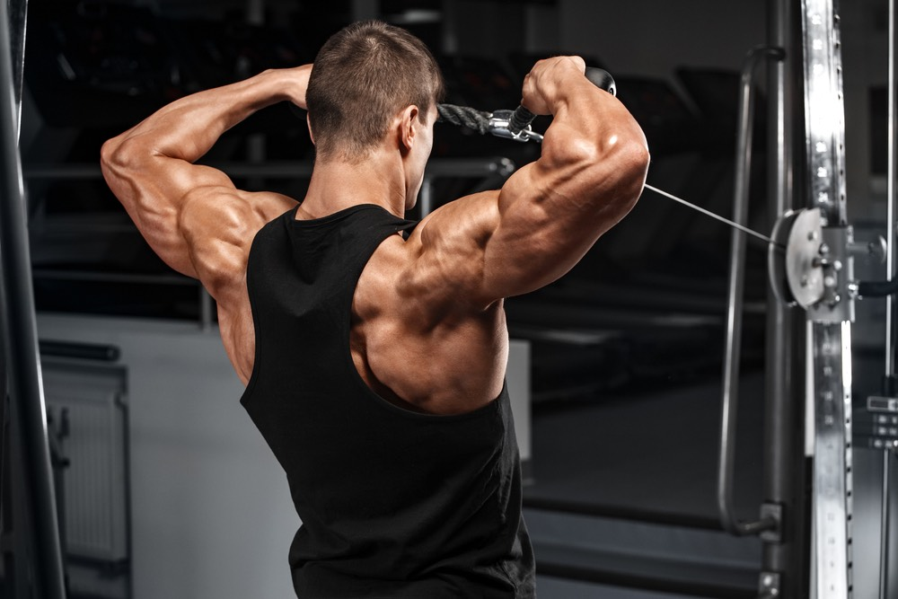

A barbell overhead shoulder press (aka barbell standing shoulder press) works not just your shoulders, but most of your body.
That makes it a terrific core strengthener and mass builder, among other things
How To Do Barbell Overhead Shoulder Press:
Put your feet at shoulder-width, and engage your core and glutes as you hold a barbell at your shoulders, palms facing forward.
Next, push the bar upward and squeeze your shoulder blades together at the peak.
Lower steadily and carefully.
At no point should your lower back arch — keep your core engaged to stop this happening.
2. Seated Dumbbell Shoulder Press

A proper deltoid workout simply isn’t complete without the seated dumbbell shoulder press.
In fact, some say these shoulder workouts with dumbbells are an entire deltoid regimen unto itself,
targeting the anterior, lateral, and posterior deltoid muscles (with an emphasis on the middle delts)
How To Do Seated Dumbell Shoulder Press:
Sit on a low-back bench and hold a dumbbell in each hand at shoulder level, palms facing forward.
Keeping your head and spine perfectly straight, lift the dumbbells overhead toward one another, stopping just short of having them touch at the top.
Hold the position for a few seconds and then carefully reverse course. Repeat.
Again, it’s important to keep your core engaged during this movement — your lower back shouldn’t arch.
3. Front Raise

You can use either a weight plate or barbell for this shoulder workout, which targets the anterior delts.
No matter what you decide to use, prepare for a seriously intense time with one of the best shoulder workouts for mass.
Don’t max out on the weight, as it will quickly turn healthy pain into unhealthy injury.
How To Do Front Raise:
Keep your hands at hip height as you hold the weight in front of you.
Your feet should be even with your shoulders and your core should be tight.
Next, retract your shoulder blades and keep your arms straight as you lift the weight to shoulder level.
Breathe steadily and lower the weight carefully.
Repeat.
4. Reverse Pec Deck Fly

This shoulder exercise targets your posterior delts and requires a pec deck machine.
It’s also the perfect chest, back and shoulder workout for building mass.
How To Reverse Pec Deck Fly:
Face the machine, and position the seat so that the handles are at shoulder level on either side.
Next, hold the handles with your palms facing inward.
Tighten your torso and extend your arms out to the side, pushing through all the way.
Responsibly return to the starting position.
Repeat.
5. Dumbbell Lateral Raise

If you prefer a more traditional lateral raise, look no further than this full shoulder workout.
It likewise targets the middle deltoids and works wonders when executed properly.
How To Dumbell Lateral Raises:
Start in the standing position, keeping your feet shoulder-width apart, your abs tight, your chest up, your head straight, and your shoulders pinched. Hold the dumbbells at either side, retaining a neutral grip.
Now, here comes the hard part. Using just your shoulders and arms, raise the dumbbells a notch above shoulder level.
Hold for a moment.
Lower the dumbbells back to the starting position — with control. Don’t let them just drop to your sides.
Repeat.
6. One-Arm Cable Lateral Raise

Similar to the lateral raises, this shoulder exercise targets the middle deltoid muscles and delivers ample tension.
How To One-Arm Cable Lateral Raise:
Stand sideways to the cable machine, keeping your feet shoulder-width apart. Using the hand that’s opposite the pulley, grab the D-handle.
With your abs tight and your shoulders back, raise the cable using just the motion of your arms and shoulders.
Take your arm just past shoulder level and hold for a few seconds before slowly returning to the original position.
Repeat as necessary and then switch sides. Your hand and elbow should move in conjunction with one another the entire time.
7. Cable Face Pulls

Another shoulder exercise that requires the use of the cable muscle, Face Pulls are important in creating a well-developed back and rear deltoid physique.
The movement, while simple, targets your posterior deltoids and trapezius, while also adding further stress to the main components of your shoulders.
To complete Cable Face Pulls:
How To Cable Face Pulls:
Stand facing the cable machine
Set the cable framework to around eye height
Using the rope connection, clutch each end and raise your arms to shoulder height
Bring your elbows in and pull the cable towards your face
Hold and tense your back
Release slowly
Repeat